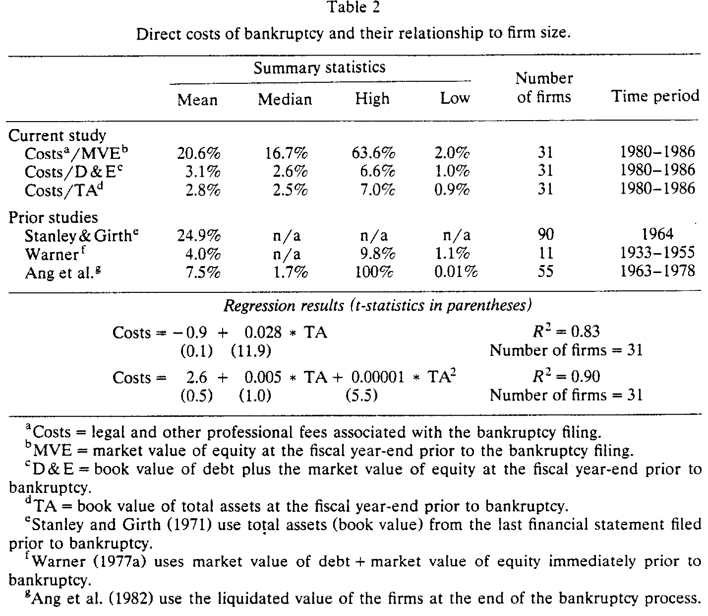
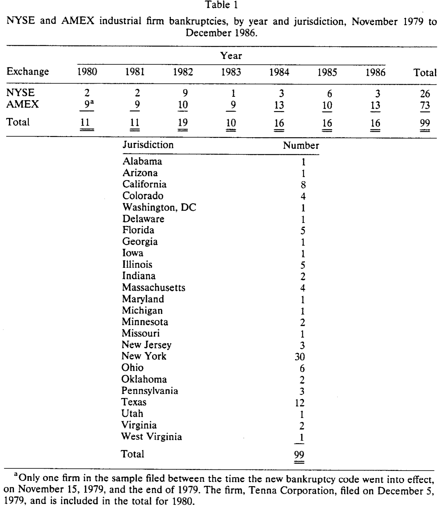
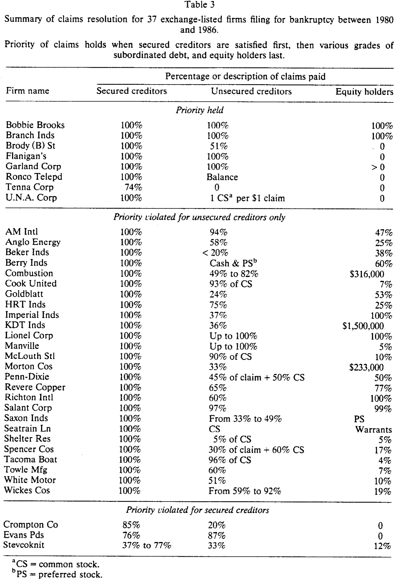
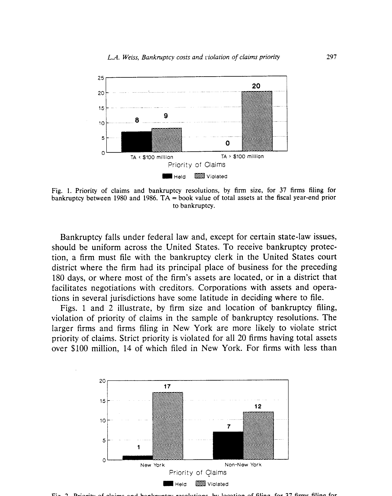
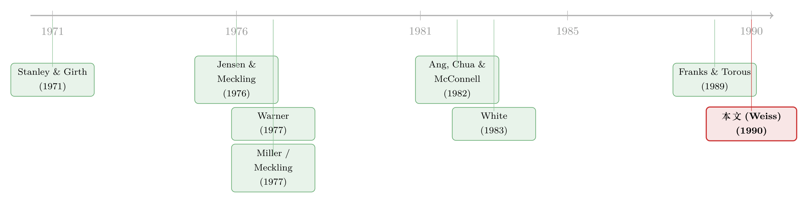

破产真正的代价，不是律师费，而是被偷走的优先权
本文读的是 Weiss (1990, Journal of Financial Economics)：在 37 家于 1979–1986 年申请破产的纽交所/美交所公司里，破产的直接成本平均只有「债务账面值 + 股权市值」的 3.1%——小到几乎不影响债券定价；但优先权（priority of claims）在 29/37（78%）的案子里被违反。换句话说，破产真正咬人的，从来不是付给律师的那点钱，而是一场把钱从债权人手里悄悄挪给股东的再分配。
1 引言：两种「成本」，和一个被讲了几十年的故事
公司金融里有一个被讲了几十年的故事：公司不敢把杠杆加到顶，是因为破产是有代价的。债多了，违约概率上去，预期破产成本上去，于是在「税盾的好处」与「破产的坏处」之间，存在一个最优资本结构。这就是教科书里那条权衡理论 (trade-off theory) 的曲线。
可问题是——破产到底「贵」在哪里？
经济学家给出的答案，其实是两套互不相干的账。
第一套账叫直接成本 (direct costs)：律师费、会计师费、各种管理与专业服务费，是破产程序里看得见、数得清的那部分。早年的估计五花八门：Stanley 和 Girth (1971) 给出 24.9%，Warner (1977a) 在一批铁路公司里只数出 4.0%，Ang、Chua 和 McConnell (1982) 在一批更小的公司里数出 7.5%。数字差这么远，争论自然不会停。
第二套账，是一个更刺眼、却更难量化的东西：优先权是否被维持。所谓优先权，是指清偿要严格按照合同约定的次序——有担保债权人先拿，然后是各级次级债，股东垫底。经济学家长期怀疑：破产法庭根本守不住这条线。Meckling (1977) 直接开骂：「法院、国会和证监会，就是不肯把股东老老实实地放到纯粹剩余索取者的位置上。」Miller (1977) 说得更精准：「允许股东躲进法院的保护伞、并借此保住对一家已违约公司的控制权，等于白送给他们一份以债权人为代价的看涨期权。」
一份以债权人为代价的看涨期权——记住这句话，它是整篇论文的灵魂。
这篇论文要做的，就是把这两套账，第一次同时摊在 1979 年新《破产法》(the Code) 之下、一批正经的上市工业企业身上，逐家逐户地数清楚。
2 第一个反转：直接成本，小到可以忽略
我们先看第一套账，因为它的结论最干脆，也最让人意外。
在 31 家有完整费用记录的公司里，作者用三把不同的尺子去量直接成本（都在破产申请前一个会计年度末计量）：
- 占股权市值 (MVE) 的
20.6%（范围 2.0%–63.6%）； - 占债务账面值 + 股权市值 (D & E) 的
3.1%（范围 1.0%–6.6%）； - 占总资产账面值 (TA) 的
2.8%（范围 0.9%–7.0%）。
第一个数字 20.6% 看着吓人，但那是因为分母——股权市值——在临近破产时已经被腰斩再腰斩。真正该看的是后两把尺子：相对于公司的全部索取权，破产的直接成本只有 3.1% 上下。
这是什么概念？正如 Warner (1977a) 早就论证过的，这么小的直接成本，对破产之前那些索取权（债券、股票）的定价，几乎没有任何影响。也就是说，如果你想用「破产很贵」来解释为什么公司不肯多借钱，那这条路——至少在直接成本这一头——基本是走不通的。

Table 2
如表 2 所示，作者还顺手回答了一个老争论：成本对公司规模是不是凹函数？Warner (1977a) 当年发现大公司的破产费用占比更低（规模效应），Ang 等人 (1982) 也找到了类似的「scale effect」。但本文没找到。一条简单的回归是
$$ \text{Costs} = -0.9 + 0.028 \times \text{TA}, \qquad R^2 = 0.83, $$
总资产前的系数 t 值高达 11.9，说明成本和总资产高度相关——但这只说明「越大的公司花钱越多」。再加一个二次项
$$ \text{Costs} = 2.6 + 0.005 \times \text{TA} + 0.00001 \times \text{TA}^2, \qquad R^2 = 0.90, $$
二次项显著（t = 5.5）而一次项不显著（t = 1.0），说明成本占总资产的比例不会随规模上升而下降——没有凹性，没有规模经济。作者的解释很克制：Warner 的样本是受重度监管、债务层级极多的铁路公司，破产规则也变了，新的融资技术也插了一脚。
无论如何，第一个反转已经落地：破产的直接成本，小到不值得写进资本结构的故事里。（顺带一提，「我们到底有没有把破产成本数全、数准」本身就是个陷阱，参见《我们只统计了「死得不那么惨」的那些公司》里关于样本选择的讨论。）
3 那么，真正的代价藏在哪里？
直接成本这条路堵死了，一个自然的问题是：如果破产真的是一种摩擦，它到底摩擦在哪？
答案，是第二套账——优先权。
先交代样本。1979 年 10 月 1 日新《破产法》生效后，申请破产的企业数量从 1980 年的 4.4 万家暴涨到 1986 年的 8.1 万家。作者从证监会年报、《华尔街日报》索引、Compustat 与 CRSP 的退市记录里，拼出 1979 年 11 月至 1986 年 12 月间所有申请破产的纽交所/美交所公司，初始名单 99 家，分布在 32 个司法辖区。受预算和时间所限，数据采集集中在 7 个辖区（共 51 起申请），再剔掉尚未结案、卷宗被法官借走或已转入档案库的，最终样本 37 家。
这 37 家公司有几个特征值得记住：从申请到结案平均耗时 2.5 年（标准差 1.4 年），最短不到 8 个月，最长超过 8.3 年——远比 Warner 那批铁路公司的 12.5 年要快。它们的债务/总资产比是 77%，比 Compustat 上非破产公司 51% 的均值高出整整一半。它们是真正资不抵债、被债压垮的公司。

Table 1
4 识别策略：为什么 Chapter 11 几乎注定要违反优先权
这里要稍微解释一下制度，因为本文「识别」的根，不在某个计量技巧，而在法律的设计本身。
破产有两条路。Chapter 7 是清算：法院指定托管人，按优先次序变卖资产、依次清偿，优先权永远被维持。但 37 家公司里只有 2 家走了这条路。绝大多数走的是 Chapter 11 重整：管理层继续运营（术语叫「债务人占有」debtor-in-possession），各方就一份重整计划讨价还价、投票、批准——而正是这个谈判结构，给优先权的违反开了一道又一道门。
作者把这些门一扇扇拆给你看：
- 120 天排他期：债务人自动获得 120 天独家提案权，期间无人能提竞争方案，法官还常常延长。债权人若想自己提方案，不仅要等排他期结束，还得自掏腰包做昂贵的资产评估。结果是 37 个案子里只有 1 起出现了债权人发起的方案（Evans Products）。
- 投票规则：每一类「受损」债权人中，必须有人数过半且金额三分之二赞成，计划才能通过；股东也要三分之二多数通过。这等于把否决权塞进了次级索取者甚至股东手里。
- 强制批准 (cram-down)：若法官认为达不成一致，可强行通过方案，但前提是先开昂贵的估值听证会，确保异议类别拿到的不少于清算所得。光是这种听证会的「威胁」，往往就足以逼债权人接受一个违反自己优先权的方案。
- 税务杠杆：现行税法下，要保住公司的「壳」、保住税前亏损结转 (tax-loss carryforwards)，必须有股东配合。于是股东可以拿配合当筹码，从一家资不抵债的公司里换走一笔分配。
把这些拼起来你就明白：在 Chapter 11 里，法律亲手赋予了次级债权人和股东拖延、增加成本、并以此要挟的能力——这正是 Miller 口中那份「看涨期权」的制度来源。优先权不是偶尔被违反，而是被这套博弈结构系统性地侵蚀。（关于「在法院之外谈判反而更慷慨股东」的镜像证据，可参见《破产之外的那条暗路：为什么「庭外和解」反而肯多给股东一笔钱》。）
5 主要结果：78% 的破产违反了优先权
方法上，作者用法院批准的重整计划作为「谁拿到多少」的权威来源——计划必须写明每一类债权人受偿的现金与证券、是否受损、以及是否至少能拿到清算所得。计划由中立的法官确认，是「最及时、最客观」的信息源。作者还逐案给计划里证券的市值（若有估值）或面值赋值，并访谈了 14 位经办律师。
结论是：严格优先权在 78%（29/37）的案子里被违反。

Table 3
如表 3 所示，违反的纹理非常清楚：
- 有担保债权人的合同基本被守住：34/37（92%）的案子里，担保债权人足额受偿。唯一的三个例外是 Crompton、Evans Products 和 Stevcoknit，且各有特殊缘由（养老金盈余争讼、债权人发起方案、抵押品市值崩塌）。
- 崩溃主要发生在无担保债权人内部、以及无担保债权人与股东之间。最生动的例子是 White Motor 的重整计划：高级无担保债券持有人拿到
61%，高级无担保债权人55%，一般无担保债权人51%，而次级无担保债券持有人居然也拿到14%——次级的凭什么在高级的没拿满之前就分到钱？律师们要么不知道，要么不愿说，只坚称「协商出来的方案让所有人都更好」。 - 股东几乎从不空手而归。只有 7 起（19%）股东颗粒无收，其中 5 起是优先权被维持、2 起是被违反。剩下的案子里，41% 的股东拿到「一小份」（≤25%），32% 拿到「相当一份」（>25%）。甚至有 6 家公司股东保住了重整后 99%–100% 的股权——其中 Imperial Industries 和 Richton International，担保债权人虽足额受偿，无担保债权人却只拿到 37% 和 60%，股东反而留下了 100%。一位律师的话堪称点睛：「丢给股东一根骨头、桌上的一点碎屑，是为了把交易做成、保住税前亏损结转。」
还有一个耐人寻味的地域差异：在纽约申请的 18 起里，优先权只在 1 起中被维持；在纽约之外申请的 19 起里，却有 7 起被维持。

Figure 2: Priority of claims and bankruptcy resolutions, by location of filing, for 37 firms filing for
如图 2 所示，破产法庭的「脾气」似乎和它所在的城市有关——纽约的法庭更愿意纵容对优先权的偏离。律师们告诉作者，更大、更复杂的破产，给股东和次级债权人留下的操作空间也更大。
把两套账并在一起，本文真正的贡献就浮出水面了：破产的摩擦，不在那 3.1% 的律师费里，而在这场把价值从债权人手里系统性地挪给股东的再分配里。 它不是「无谓损失」式的成本（钱没凭空蒸发），但它是一种事前就会被定价的契约不确定性——既然股东握着一份看涨期权，债权人就会在发债时要回补偿，这才是优先权违反真正写进资本成本的方式。（与「拍卖本可把资产卖到最高价、破产却偏不用拍卖」的效率之问相映成趣，见《拍卖能把东西卖到最高价，可破产偏偏不用拍卖》。）
6 文献脉络
这条研究脉络，可以顺着「两套账」往回捋。
最早把直接成本量化的，是 Stanley 和 Girth (1971) 那本布鲁金斯的破产研究，给出了高达 24.9% 的费用占比。真正把它钉进资产定价框架的，是 Warner (1977a, 1977b)：他在铁路公司里数出 4.0% 的直接成本，并论证如此之小的成本对风险债务的定价微乎其微——这成了「破产成本不足以解释资本结构」一派的基石。Ang、Chua 和 McConnell (1982) 用更小的公司把这个数字推到 7.5%，并重新找到了 Warner 的规模效应。
另一条线，是优先权违反的「问题意识」。它的思想源头是 Jensen 和 Meckling (1976) 的代理框架——债权人与股东之间的利益冲突——以及 Meckling (1977)、Miller (1977) 关于「股东在破产中获得看涨期权」的尖锐论断。White (1983) 则从政策角度讨论了新《破产法》如何放大了这种扭曲。

本文 (Weiss, 1990) 站在两条线的交汇处：它是第一篇在新《破产法》之下、覆盖广泛工业企业、同时把直接成本与优先权违反逐案量化的研究。和它几乎同期的 Franks 和 Torous (1989)、以及 Eberhart、Moore 和 Roenfeldt (1990)，从证券定价的角度独立印证了优先权偏离的普遍性——三篇论文合在一起，把「破产中优先权被系统性违反」从经济学家的猜想，变成了被数据反复确认的事实。Altman (1984) 关于间接成本的进一步追问，则提醒我们：本文数清的，仍只是冰山露出水面的那一角。
7 评论与延伸（Q&A + 研究方向）
(a) 几个可能的疑问
Q：直接成本只有 3.1%，是不是因为漏算了「间接成本」？
是，而且作者自己第一个承认。间接成本——流失的销售、存货贬值、关键员工出走、供应商收紧账期、管理层注意力被破产吸走导致的竞争力下降——全是不可观测的机会成本，本文一概没算。文中举的 Drexel Burnham Lambert，间接成本足以彻底摧毁公司价值。所以「3.1%」只能读作「直接成本小」，不能读作「破产成本小」。
Q：用重整计划里的数字来判定优先权是否被违反，可靠吗？
这是本文最该被盯住的识别软肋，作者也列了三条局限：(1) 债权额是法院「认可」的额度，而法院默认接受管理层估值，除非债权人花钱打听证会推翻；(2) 法院可能因未计适当利息而低估债权；(3) 法院默认管理层对「是否受损」的判断。三条偏误的方向恰好都倾向于「低估对债权人的亏待」——也就是说，真实的优先权违反程度，只会比 78% 更严重，不会更轻。
Q：有担保债权人几乎都足额受偿，这算不算「优先权其实守住了」？
不能这么读。本文的核心恰恰是：优先权的崩溃有结构——它发生在无担保债权人内部、以及无担保债权人与股东之间，而担保合同被尊重（34/37）。这说明问题不在「法院不守规矩」这种笼统指控，而在 Chapter 11 的谈判与投票机制，专门侵蚀那些缺乏抵押、又被赋予了否决权与拖延能力的中间层级。
Q：股东拿到东西，一定是「违反优先权」吗？会不会公司其实有剩余价值？
个别案子确实如此：Bobbie Brooks 和 Branch Industries 后来翻身、债权人足额受偿，股东留 100% 股权完全正当。但作者把这些与「担保债权人足额、无担保债权人只拿 37%–60%、股东却留 100%」的案子（Imperial、Richton）区分得很清楚——后者是不折不扣的合同违约。判定标准始终是：债权人没拿满时股东是否还分到了东西。
Q：纽约 vs. 纽约之外的差异，是法院偏好，还是案子本身不同？
本文只能给出相关性，给不出因果。大公司、复杂案子更可能在纽约申请，而律师也说越复杂的破产越容易偏离优先权——所以「地域」可能只是「公司规模与复杂度」的代理变量。把法院身份当成外生冲击来做因果，是后续研究的事，本文没有也无法做到。
Q：既然优先权这么容易被违反，债权人为什么不在合同里事先堵死？
这正是本文最有张力的留白。优先权违反是事前可预期的，理性的债权人理应在定价（更高的利差）或契约（更强的保护性条款）上要回补偿。本文只把「现象」钉死，没有走到「事前如何被定价」这一步——而这恰恰是后来结构化信用风险模型、以及违约回收率研究要接的棒。
(b) 几个可能的研究问题与提案
1. 优先权违反的「事前定价」：从新债发行利差里读回收率预期
【经济故事】如果股东握着一份看涨期权，债权人在发债时就该索要补偿。那么，事前预期的优先权违反程度，应当被定价进信用利差，尤其是无担保、低抵押覆盖的债券。 【可行性】中。需要把 Weiss 式的逐案优先权数据（或现代版的 APR 偏离度量）与发行时点的债券利差、契约条款匹配。识别难在「预期」不可观测，可用行业/法院层面的历史违反率做工具。数据可得（TRACE + Mergent FISD + 破产卷宗），doable 但费力。
2. 法院异质性作为外生冲击：辖区拥堵与优先权偏离
【经济故事】本文已暗示「纽约 vs 其他」的法庭差异。若不同辖区在法官工作量、惯例上的差异与公司基本面无关，就能把「法院身份」当成准外生变量，估计优先权偏离对事后债权人回收、乃至事前借贷成本的因果效应。 【可行性】中。可借鉴《法官太忙，借钱就贵》的设计，用案件随机分配或辖区拥堵做识别。难点是上市公司破产样本天然偏小，可能要下沉到私人公司或公司债违约样本。
3. 外资债权人与优先权违反：谁更容易被「挪走」？
【经济故事】优先权违反本质是谈判桌上的再分配。那么，信息劣势、协调成本更高的债权人（如外资持有人、分散的散户债主）是否在重整中系统性地拿得更少？这把本文与外资持有人、信用市场的议题接上了。 【可行性】中偏低。需要重整计划里按债权人类型/国籍拆分的受偿数据，公开披露往往不够细。可行的折中是用债券层面的持有人结构（保险、外资、共同基金）匹配违约后回收率。识别可信但数据是瓶颈。
4. 优先权违反与公司债流动性：违约前的「定价摩擦」
【经济故事】若优先权违反让回收率更不确定，那么临近财务困境时，债券的逆向选择与流动性折价应当放大。本文的横截面，可以延伸为一个「困境→优先权不确定性→流动性」的时序链条。 【可行性】高。TRACE 提供高频公司债成交，违约/重整事件可对齐。可用同发行人多债券、或事件窗口前后的价差变化识别，与《一把更稳的尺子，量出了危机里公司债的「流动性恐慌」》的方法论兼容。
8 我的判断
这是一篇「把现象钉死」的经典实证：样本只有 37 家，没有花哨的计量，但它干净利落地完成了两件事——把破产的直接成本证小（3.1%，从此这条解释资本结构的路基本被关上），把优先权违反证实（78%，且结构清晰：担保层被尊重、无担保层与股东层被侵蚀）。两个结论合起来，把「破产成本」的讨论从「律师费有多贵」彻底扭转到「契约优先权有多脆」。这是它三十多年仍被反复引用的原因。
要担心的，主要是识别与外推。其一，判定优先权是否违反完全依赖重整计划里被法院认可的数字，而这些数字的偏误方向系统性地有利于「低估亏待债权人」——好在这只会让 78% 成为下界。其二，37 家、7 个辖区、单一时间窗，样本既小又可能有选择性（结案快的、卷宗可得的才进样本），地域差异更只是相关性。其三，本文止步于「事后分配」，没有走到「事前如何被债权人定价」——而这恰恰是这条文献后来最有价值的延伸。
我最想看到的后续，是把优先权偏离接到事前的信用定价与流动性上：如果股东的那份看涨期权是真的，它就该在债券利差、契约条款、乃至违约前的流动性折价里留下指纹。Weiss 数清了桌上的牌；下一步，是看市场在发牌之前，到底有没有把这副牌算进价格里。
参考文献
Altman, Edward I. (1984). A further empirical investigation of the bankruptcy cost question. Journal of Finance 39(4), 1067–1089.
Ang, James S., Jess H. Chua, and John J. McConnell (1982). The administrative costs of corporate bankruptcy: A note. Journal of Finance 37(1), 219–226.
Eberhart, Allan C., William T. Moore, and Rodney L. Roenfeldt (1990). Security pricing and deviations from the absolute priority rule in bankruptcy proceedings. Working paper, Georgetown University and University of South Carolina.
Franks, Julian R., and Walter N. Torous (1989). An empirical investigation of U.S. firms in reorganization. Journal of Finance 44(3), 747–769.
Jensen, Michael C., and William H. Meckling (1976). Theory of the firm: Managerial behavior, agency costs and ownership structure. Journal of Financial Economics 3(4), 305–360.
Meckling, William H. (1977). Financial markets, default, and bankruptcy: The role of the state. Law and Contemporary Problems 41(4), 13–38.
Miller, Merton H. (1977). The wealth transfers of bankruptcy: Some illustrative examples. Law and Contemporary Problems 41(4), 39–46.
Stanley, David T., and Marjorie Girth (1971). Bankruptcy: Problems, Process, Reform. Brookings Institution, Washington, DC.
Warner, Jerold B. (1977a). Bankruptcy costs: Some evidence. Journal of Finance 32(2), 337–347.
Warner, Jerold B. (1977b). Bankruptcy and the pricing of risky debt. Journal of Financial Economics 4(3), 239–276.
Weiss, Lawrence A. (1990). Bankruptcy resolution: Direct costs and violation of priority of claims. Journal of Financial Economics 27(2), 285–314.
White, Michelle J. (1983). Bankruptcy costs and the new bankruptcy code. Journal of Finance 38(2), 477–504.